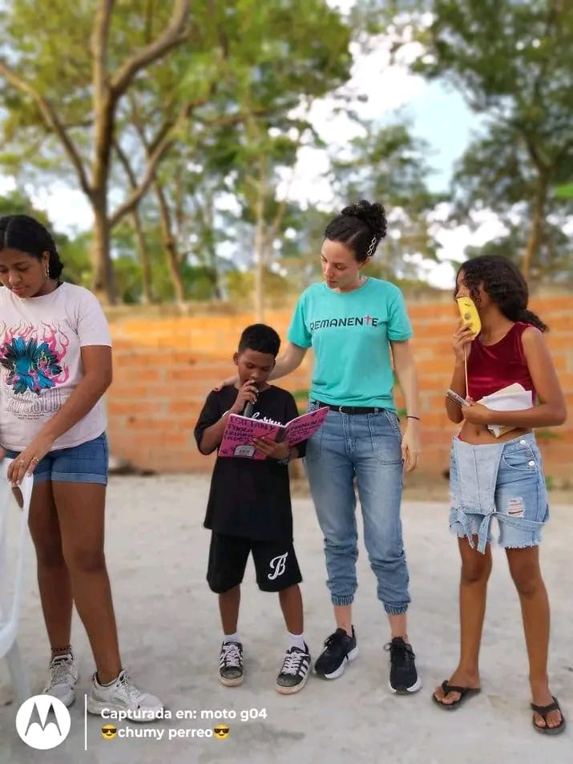

Haciendo discípulos y formando misioneros en comunidades de necesitadas.
Somos una organización dedicada a proclamar el evangelio de Jesucristo a través del servicio práctico, la educación y el discipulado intencional. Creemos que cada niño y cada joven tiene un propósito divino.
Brindamos herramientas como clases de inglés para abrir puertas de oportunidad a los niños de nuestra comunidad.
No solo enseñamos; caminamos junto a cada persona para que crezcan en su relación con Dios.
Entrenamos a la próxima generación de misioneros listos para servir en cualquier lugar del mundo.
Dedicado a la visión estratégica y al desarrollo de nuevos líderes en el campo.
Capacitadora y discipuladora de niños y adolecentes.

Fundadores del ministerio de misericordia, pero quién lo sostiene es el Espíritu.
Liderando el programa de inglés y las herramientas pedagógicas para los niños.
Estamos trabajando activamente en las zonas de mayor necesidad en Barranquilla, Colombia.